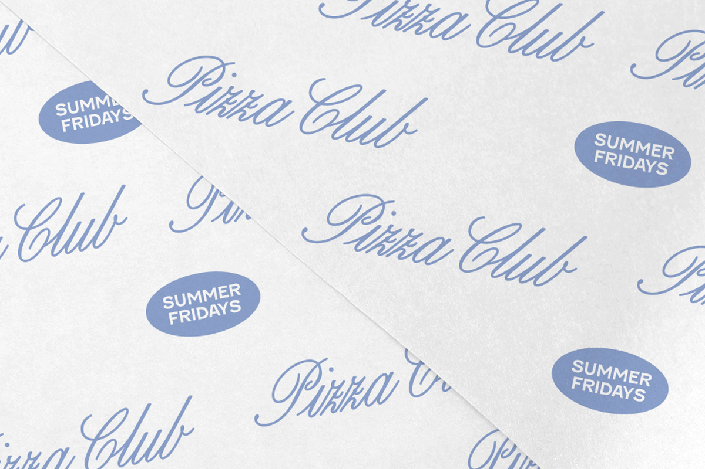

Whitney Badge is a graphic designer and art director based in New York. She is currently a Design Lead at Pentagram, and has also worked collaboratively with clients spanning the arts, culture, and creative technology. Her work is conceptual, typographic, and contextually aware.
-
 ALMA
ALMA
ALMA is a public relations firm operating at the intersection of contemporary art, social change, partnerships and innovation. Four years in, ALMA has mastered what it means to guide an industry and the culture it garners. It requires intuition, focus, and flexibility– something that this brand unveiling aims to represent. In Hannah Gottlieb-Graham's words, this brand identity is "a better way of telling the story of what we've been doing for such a long time."
-
Reddit
Reddit approached Pentagram to assess the vast array of visual and verbal components it had generated over the years and to create a cohesive brand identity– all while preserving the company's spirit and emphasizing array of ideas exchanged on the platform. In doing so, conversations became the central focus, informing the logo, display typeface, and shape components used across marketing and in-product.
-
The Record Shop
The Record Shop, a Pop-Up at the MoMA Design Store showcases vinyl records in MoMA’s collection from Brian Duffy's image of David Bowie to Paula Scher's design for Cheap Trick. In-keeping with this spirit while adhering to MoMA's overarching design standards, we dug into the archives to create a bespoke mark using MoMA Sans Condensed Bold. The result is a micro-identity that can be used year after year, and applied in digital, spatial and printed materials.
-
 Material Worlds
Material Worlds
Material Worlds is a discussion series at MoMA that gathers the newest generation of architects to create sustainable environments and build more equitable futures. From this, the concept of an anthropocene emerged, dissecting our lived environment to produce textures associated with the themes addressed in the series. These textures were acid-washed in chartreuse, referencing both ecological growth and alarm, to produce a series of promotional materials for the event.
-
 MountainA
MountainA
MountainA is a production company founded by Natalie Portman and Sophie Mas to "support meaningful, timely projects... with some of the world's most inspiring filmmakers." Taking reference from film noir titles from the 1940s, this hand-drawn mark is simple and stated. When revealed, fractals of light bounce off the angular forms as it appears. This concept is inspired by alpenglow, when sunlight reflects off mountain peaks as the sun rises and sets.
-
SIMKHAI
In preparation for their relaunch, SIMKHAI partnered with Aruliden to ready the brand for its next evolution. Celebrating the spirit of craft, the team created a refreshed identity, starting with a shortened name, a refined mark, and a scalable monogram.
Since then, I have worked independently with Jonathan Simkhai to further realize the brand as it is applied to hardware such as buckles and chain detailings. -

Pizza Club
In celebration of its 5th birthday, Summer Fridays hosted a weekend-long pop up in New York, collaborating with Upside Pizza to takeover their space. To dedicate this milestone moment, we created a pop-up identity for the event, complete with takeaway pizza boxes and branded merchandise.
-
 Apple iPhone 14 Pro
Apple iPhone 14 Pro
This work is confidential.